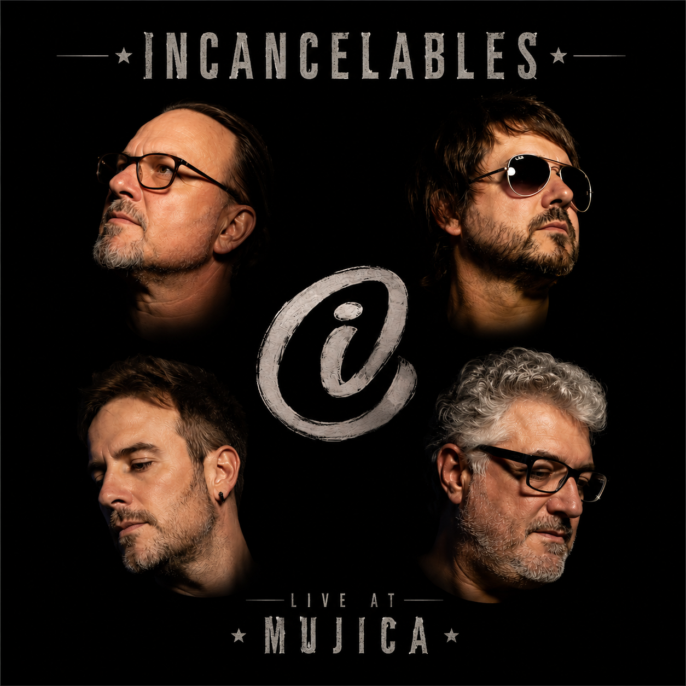

Live at Mujica
Un registro en vivo de una noche que quedó para siempre. Cada mes liberamos una nueva canción hasta completar el disco.
🔥 Recién salido del horno
Invisible
Publicado el 15 de Agosto de 2026
Primer adelanto oficial de Live at Mujica.
Live at Mujica
Playlist oficial del disco.
-
01
Invisible
Publicado
-
02
Próximo lanzamiento
Agosto 2026
-
03
Próximo lanzamiento
Septiembre 2026
-
04
Próximo lanzamiento
Octubre 2026
Reproduciendo
Invisible
Escuchá el álbum completo
Acerca de Live at Mujica
Live at Mujica registra una noche muy especial para Incancelables.
En lugar de publicar el disco completo, decidimos compartir una canción por mes.
Cada lanzamiento suma un nuevo capítulo hasta completar el álbum.